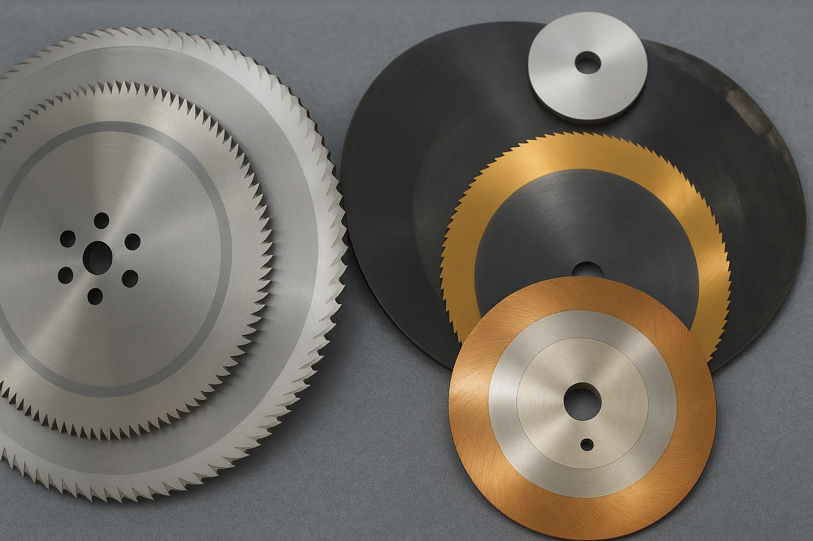

Servicio
Afilado de sierras
- Sierras HSS.
- Sierras segmentadas hasta 80".
- Sierras con pastilla de carburo.
- Reposición de pastillas de carburo.
- Reposición total de sierras con pastilla de carburo.
- Reparación de sierras despostilladas HSS.
- Venta de sierras HSS y segmentadas.
- Venta de sierras con pastilla de carburo.
- Venta de sierra cinta.
- Reparación y cambio de pastillas de tungsteno.